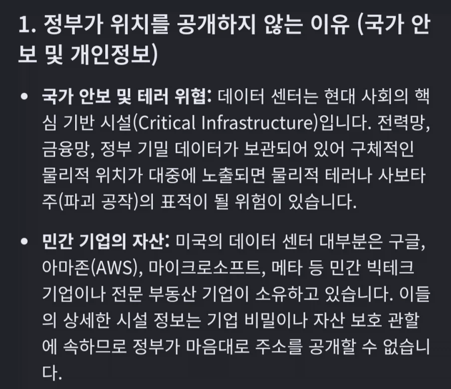

https://bbs.ruliweb.com/best/board/300143/read/77312087

미국 데센은 국가 보안시설로써 비공개이기 때문
자기 집 앞에 지어지는게 공장인지 데센인지 알 길이 없음
NGO같은 민간단체가 열심히 추적하고는 있지만, 놓치는게 많음
https://bbs.ruliweb.com/best/board/300143/read/77312087

미국 데센은 국가 보안시설로써 비공개이기 때문
자기 집 앞에 지어지는게 공장인지 데센인지 알 길이 없음
NGO같은 민간단체가 열심히 추적하고는 있지만, 놓치는게 많음
그래도 지피티, 클로드, 그록, 제미니가 미국꺼라 다 미국에만 데이터센터 넘쳐서 다행이다
우리도 지을려는거 다 취소하자
중국만 신났어유!
악용한거잖아
와그럼 시민단체나 주민단체 집시허가자체도 안내줄거고
시위물리력 조금만 행사하면 바로 국가보안시설 공격으로 대응하겠네 ㅋㅋㅋㅋ
지금껏 저 소음뿜으면서 소송 백만건 안당한것도 그래서인갑네 ㅋㅋㅋㅋㅋ
진짜 씨발새끼들이다 ㅋㅋㅋㅋㅋㅋㅋㅋㅋㅋ
그래서 투표 때 다 뒤집힌거네 텍사스 정도면 공화당 지역이라 버텨주겠지 싶었는데 거기도 뒤집힌거면 말 다했지
의견수렴 ㅈ까고서 빠르고 신속한 행정 -> 나라 말아쳐먹는 지름길
그 빠르고 신속한 국가원수 개인 의견으로 ㅈ나 강행해서 망한 것들의 대표 예시) 우크라이나 전쟁 및 러시아의 국가적 미래
진짜 도가 지나치네 천박하노
안보시설이라면서 접근 쉬운 가정집 근처에 건설하는건 무슨 보법일까
ㅉㄲ도 그렇게 안하것다 시벌
거주지역이 더 땅도 비싼데 왜 굳이 그런데다 짓는거야?
직원 접근 편의성이라 해도 대이터 센터 크기대비 직원도 많이 없잖아
물 전기수급이 쉬운땅이라
찾아보니까 새로 부지에다 전기랑 수도 연결하는 비용보다 주택가옆에 짓는게 싸데
심지어 데센 짓기전엔 주변시세가 30만불이던게 15만불로 떨어지니까 집팔고 나가는데 십만불 제시했다네
물이랑 전기 어마어마하게 잡아먹는데 거주지역은 기존 인프라가 있어서 끌어오기 쉬움
근데 허허벌판에 지을려면 인프라 끌어오는데만 돈이 어마어마하게 들고 공사기간도 늘어남
근데 주민편의 좆까고
중국은 민간인 신경 좆도안쓰고 원하는곳에 걍 설치해버리면되니까 중국이 제일 잘나가지않을까 싶음
걔넨 사막에지음 사막에 이미 대규모 태양광발전단지에
사막화 막으려고 관수시설 다 해놔서 그대로 갖다쓰고 있음
민주당도 돈벌어야하니 데센 반대 안 할 거라는 의견이 그냥 순진한 소리였네
데센은 사람없는 사막에나 지어라
캐나다가 데이터 센터 짓기 존나 좋은 위치 같은데 왜 별로 안짓는지 궁굼하네
미국에서 음모론자가 많은 이유